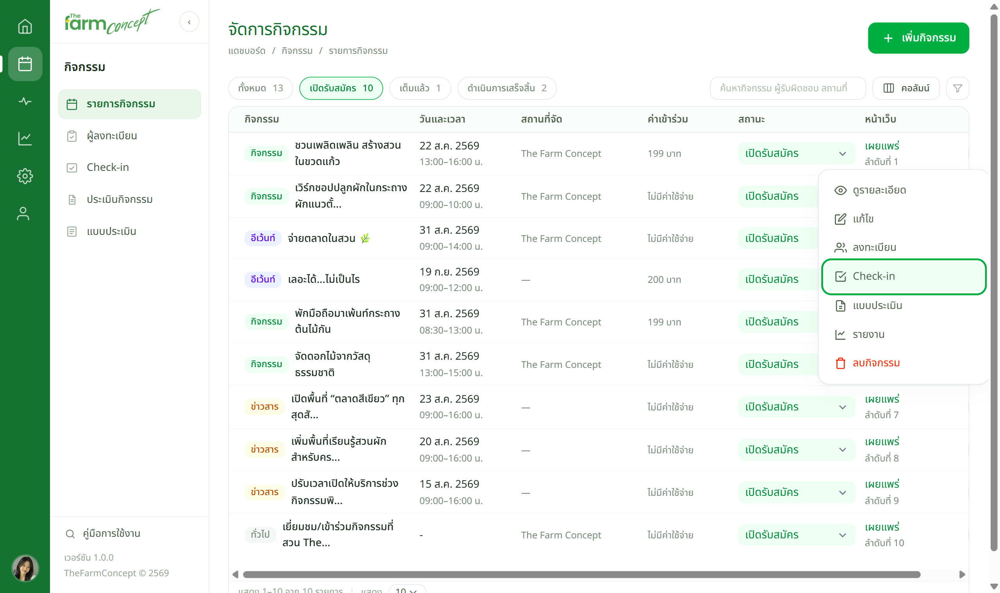
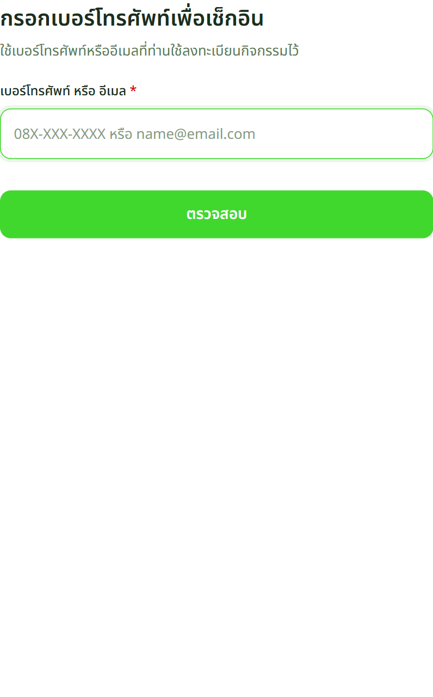
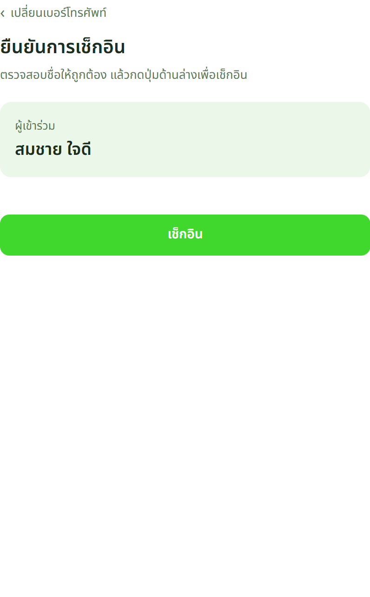
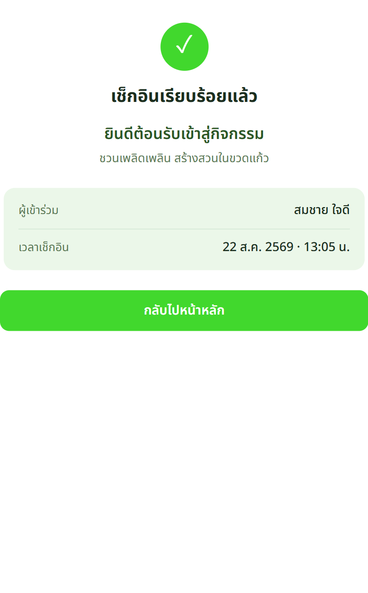
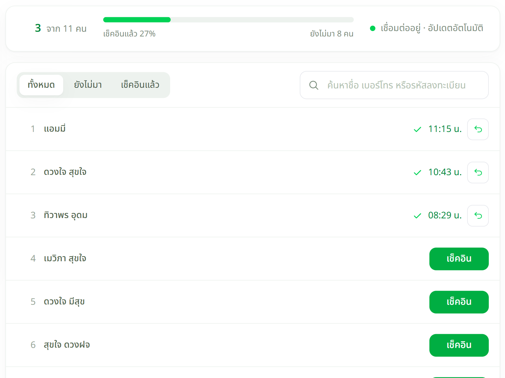
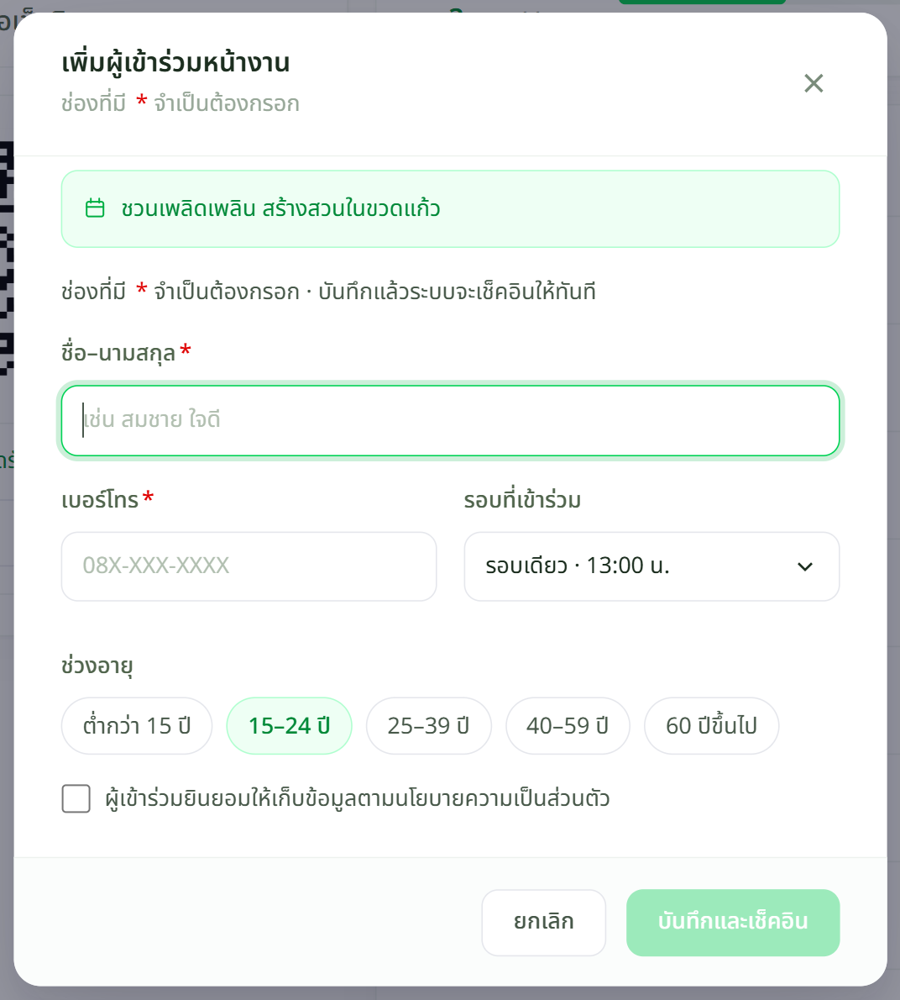

เจ้าหน้าที่
เตรียมจุดสแกน

เข้ามาแล้วกิจกรรมผิด ให้กด เปลี่ยนกิจกรรม ที่ชื่องานด้านบน ไม่ต้องย้อนกลับไปหน้ารายการ
ผู้เข้าร่วม
เช็กอินด้วยมือถือตัวเอง



เบอร์เดียวลงทะเบียนไว้หลายคน ระบบจะให้ เลือกรายชื่อ ก่อน
เจ้าหน้าที่
ดูยอดสด และเพิ่มคนหน้างาน


เจอปัญหาให้ทำอย่างไร
| หน้าจอขึ้นว่า | ให้ทำ |
|---|---|
| ยังไม่เปิดเช็กอิน | ยังไม่ถึงเวลา หรือปิดไปแล้ว — แก้ช่วงเวลาได้ที่หน้าแก้ไขกิจกรรม |
| ไม่พบข้อมูลการลงทะเบียน | ลองใช้อีเมลแทนเบอร์ · ถ้ายังไม่เจอ ให้เจ้าหน้าที่เพิ่มเป็น Walk-in |
| เช็กอินไปแล้ว | ปกติ ไม่ต้องทำซ้ำ — ระบบนับให้ครั้งเดียว |